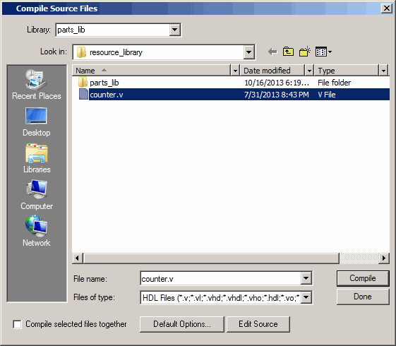

Before
creating the resource library, make sure the modelsim.ini in
your install directory is “Read Only.” This will prevent permanent
mapping of resource libraries to the master modelsim.ini file.
For additional information,
see Permanently Mapping VHDL Resource Libraries.
Procedure
- Create
a directory for the resource library.
Create
a new directory called resource_library. Copy counter.v from <install_dir>/examples/tutorials/verilog/libraries to
the new directory.
- Create
a directory for the test bench.
Create
a new directory called testbench that will hold the test bench and
project files. Copy tcounter.v from <install_dir>/examples/tutorials/verilog/libraries to
the new directory.
You are
creating two directories in this lesson to mimic the situation where
you receive a resource library from a third-party. As noted earlier,
we will link to the resource library in the first directory later
in the lesson.
- Start Questa SIM and change to the resource_library
directory.
If you
just finished the previous lesson, Questa SIM should
already be running. If not, start Questa SIM.
- Type vsim at
a UNIX shell prompt or use the Questa SIM icon
in Windows.
If the
Welcome to Questa SIM dialog box
appears, click Close.
- Select and
change to the resource_library directory you created in step 1.
- Create
the resource library.
- Select .
- Type parts_lib in
the Library Name field (Figure 1).
Figure 1. Creating New Resource Library
The Library
Physical Name field is filled out automatically.
Once you
click OK, Questa SIM creates
a directory for the library, lists it in the Library window, and
modifies the modelsim.ini file
to record this new library for the future.
- Compile
the counter into the resource library.
- Click
the Compile icon on the Main window toolbar.
- Select
the parts_lib library from the Library
list (Figure 2).
Figure 2. Compiling into the
Resource Library
- Double-click counter.v to
compile it.
- Click Done.
You now
have a resource library containing a compiled version of the counter design unit.
- Change
to the testbench directory.
- Select and
change to the testbench directory you created in step 2.